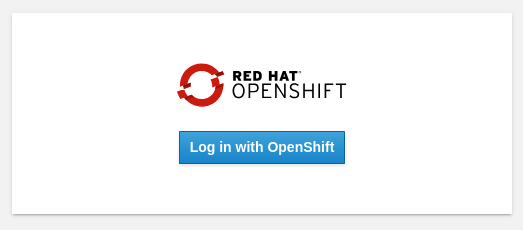

Installing Red Hat OpenShift AI Using the Web Console
Red Hat OpenShift AI is available as an operator via the OpenShift Operator Hub. You will install the Red Hat OpenShift AI operator using the OpenShift web console in this section.
Lab: Installation of Red Hat OpenShift AI
| The installation requires a user with the cluster-admin role |
-
Login to the Red Hat OpenShift using a user which has the cluster-admin role assigned.
-
Navigate to Operators → OperatorHub and search for OpenShift AI.
Figure 1. Search for OpenShift AI operator -
Click on the
Red Hat OpenShift AIoperator. In the pop up window that opens, ensure you select the latest version in the stable channel and click on Install to open the operator’s installation view.Figure 2. OpenShift AI Operator Details -
In the
Install Operatorpage, leave all of the options as default and click on the Install button to start the installation. -
The operator Installation progress window will pop up. The installation may take a couple of minutes.
-
When the operator’s installation is finished, click on the Create DataScienceCluster button to create and configure your cluster.
-
In the Create DataScienceCluster page, a number of components have been pre-selected. You can explore the components offered by expanding the Components field. Once you finish reviewing, click on the Create button.
-
After creating the DataScienceCluster, a view showing the DataScienceCluster details opens. Wait until the status of the cluster reads Phase: Ready. This represents the status of the whole cluster.
Figure 3. DataScienceCluster Instance Ready -
The operator should be installed and configured now. In the applications window in the right upper corner of the screen the Red Hat OpenShift AI dashboard should be available.
Figure 4. RHOAI Dashboard -
Click the Red Hat OpenShift AI button to log in to the Red Hat OpenShift AI dashboard. Log in as the admin user (With the same password that you used to log in to the OpenShift web console).
Figure 5. Red Hat OpenShift AI Log in -
You should be able to see the Red Hat OpenShift AI home page.
Figure 6. Red Hat OpenShift AI Home PageIt may take a while to start all the service pods hence the login window may not be accessible immediately. If you are getting an error, check the status of the pods in the project redhat-ods-applications. Navigate to Workloads → pods and select project redhat-ods-applications. All pods must be running and be ready. If they are not, wait until they become running and ready. Figure 7. Pods in Running state
| For assistance installing the Red Hat Openshift AI from YAML or via ArgoCD, refer to examples found in the redhat-cop/gitops-catalog/rhods-operator GitHub repo. |